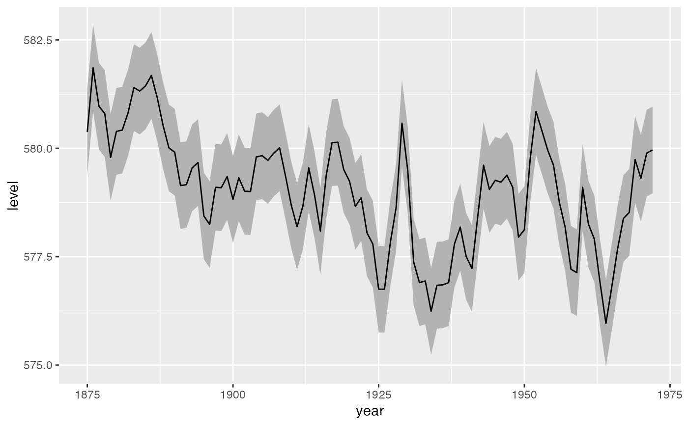

geom_stepribbon is an extension of the geom_ribbon, and
is optimized for Kaplan-Meier plots with pointwise confidence intervals
or a confidence band.
geom_stepribbon( mapping = NULL, data = NULL, stat = "identity", position = "identity", na.rm = FALSE, show.legend = NA, inherit.aes = TRUE, ... )
| mapping | Set of aesthetic mappings created by |
|---|---|
| data | The data to be displayed in this layer. There are three options: If A A |
| stat | The statistical transformation to use on the data for this layer, as a string. |
| position | Position adjustment, either as a string, or the result of a call to a position adjustment function. |
| na.rm | If |
| show.legend | logical. Should this layer be included in the legends?
|
| inherit.aes | If |
| ... | Other arguments passed on to |
geom_stepribbon inherits from geom_ribbon.
Original code: https://github.com/cran/RcmdrPlugin.KMggplot2/blob/master/R/geom-stepribbon.r
Modified code (used here): https://github.com/adibender/ldatools/blob/master/R/geom_stepribbon.R
library(ggplot2) huron <- data.frame(year = 1875:1972, level = as.vector(LakeHuron)) h <- ggplot(huron, aes(year)) h + geom_stepribbon(aes(ymin = level - 1, ymax = level + 1), fill = "grey70") + geom_step(aes(y = level))h + geom_ribbon(aes(ymin = level - 1, ymax = level + 1), fill = "grey70") + geom_line(aes(y = level))# Draw shaded area between two Kaplan-Meier curves to visualize # an RMST difference, having drawn the plot via # figure <- survminer::ggsurvplot(...) if (FALSE) { df_ribbon <- figure$plot$data %>% # access plot data select(time, surv, strata) %>% pivot_wider(names_from = strata, values_from = surv, names_repair = ~c("time", "surv", "surv2")) %>% filter(time < 10) %>% # maximum time for RMST--edit here arrange(time) %>% # carry forward survival values per stratum fill(surv) %>% fill(surv2) figure$plot + geom_stepribbon(data = df_ribbon, mapping = aes(x = time, ymin = surv, ymax = surv2), fill = "gray80", alpha = 0.5) }